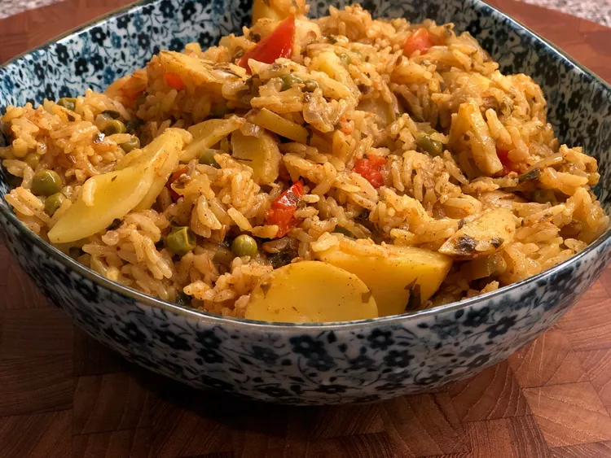

Pudina Pulao

Description
This is probably one of the most flavorful rice recipes you can make in just a few minutes.
It's a spicy mint rice recipe that is hearty and filling as a vegetarian dish.
Serve this as a side dish, or you can also take it in a
lunch box and have a delicious midday meal! It is also lovely with plain or Greek yogurt.
Ingredients
-
1 (4 ounce) can chopped green chiles
-
3 tablespoons finely chopped fresh mint leaves
-
3 cloves garlic, finely minced
-
2 ½ tablespoons water
-
2 tablespoons unsweetened shredded coconut
Steps
-
Combine green chiles, mint leaves, garlic, 2 1/2 tablespoons water, shredded coconut, cilantro, cumin seeds, and ginger in a mortar; grind with a pestle into a paste.
- Turn on a multi-functional pressure cooker (such as Instant Pot®) and select Saute function
- Mix in potatoes, tomatoes, and peas. Stir in basmati rice and saute for 1 minute longer.
- Turn off Saute mode. Close and lock the lid. Select high pressure according to manufacturer's instructions;